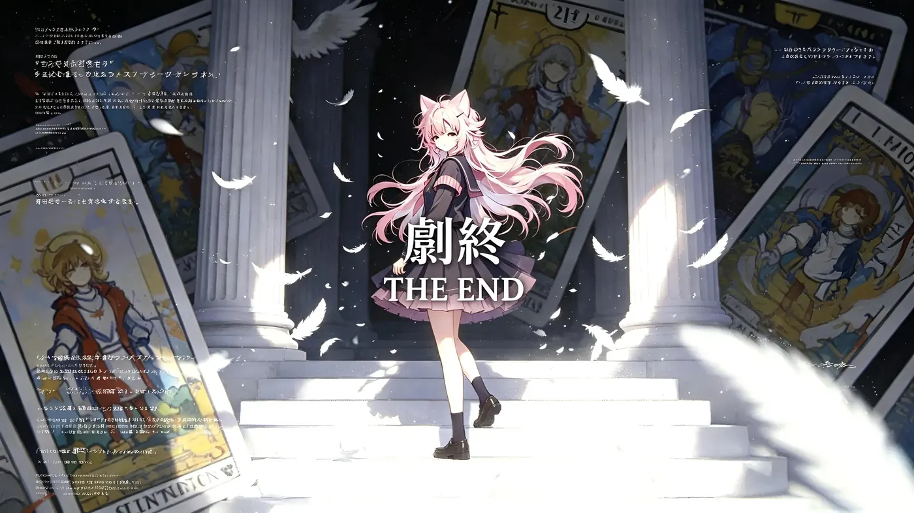

01
一颗被海包住的星
整颗星球都是海，雾常年不散。陆地只剩一小块，露出水面的部分像一座白桥，从云上看，是一小片浮在蓝色里的白。
城里只有一条走得通的街，街尽头是教堂，街另一头通到废站台。城外再没有别的，只有铁轨和更远的雪。
她画这片海的时候用了七年。
七年前，还没有人要走。— —

花会谢，夏果会落，—— 夏
万物有时，我们亦然。
整颗星球都是海，雾常年不散。陆地只剩一小块，露出水面的部分像一座白桥，从云上看，是一小片浮在蓝色里的白。
城里只有一条走得通的街，街尽头是教堂，街另一头通到废站台。城外再没有别的，只有铁轨和更远的雪。
她画这片海的时候用了七年。
七年前，还没有人要走。— —
纪念一切的城中区也在被纪念着
城中区中心立着许多盏灯，一盏顶一个人。灯亮着，先知的我们就还存在着，灯暗了……TA 只是暂时离开了吧？
所以这里的冬天最长——不是天冷，是等得久。街上的人心里都清楚，今年雪要是化得晚，就是又少了一盏灯。
「暂时离开」是她后来自己改的。
原稿上写的是「不再回来」。· ·
这地方正式的名字叫「先知的隐居地」。不过嘛，先知只是一个称呼而已。那塔罗牌背后的我们也许只是虚假的。
她手里那叠牌，是她一位朋友临别时赠送的。
牌是她朋友的。朋友走之后，
牌就一直摊在那儿，没人收。· · ·
铁轨通到城外，只跑一列车，时刻表早废了，车却照开。上车的人不回头，下车的人从没出现过。
雪天车次最多，因为雪天是告别的季节。她拍过那列车，也坐过，但每次都在下一站之前跳下来了。也许是时候未到。
没有人下过车。
她说的「下车的人」，都是她自己。· · ·
约定散尽之后，城会在海面下凝出一层影子。那不是死后的世界，是「被记住的那部分」——教堂、石阶、满天羽毛，什么都还在，只是没有一个活人可以走进去。
尽头有一座发光的塔。也许那只是最后一个还亮着的灯罢了。
记住的人只剩她了，
所以「被记住的部分」其实是她的版本。· ·
不是世界毁灭，是这一页翻完了。
她抽取朋友给的塔罗牌，上面一张写着「劇終 THE END」。现在她站在光里往塔那边走——不回头，是因为回头就会想留下。

剧终之后还有一场，
只有她一个人在演。— ·
铁轨从雾里伸进来，站台是水泥的，边角被雪和雨啃得发白。墙上钉着一块锈透的时刻表，字还认得出几个，车次早就作废。没有售票口，也没有人值班；长椅一条，冬天会积满雪。
唯一一条走得通的街，石板被雪压裂过好几次，补了又补。街两边是些低矮的房子：杂货铺、理发店、洗衣房，二楼常年亮一盏灯。地上总有落叶、樱瓣、银杏，扫不干净——这条街对季节特别在意。
城中心是一个小广场，石灯围着一座不出水的喷泉。喷泉里没水，底下铺着零钱和写着字的纸片，不知从哪年起成了许愿池。灯是石头做的，里面烧的不知道是什么，风怎么吹都不灭。
全城最高的建筑。钟曾经停过两次，第二次以后就没人再去修。教堂的门常年虚掩，里头比外面暖一点。教堂后面有一小片空地，立着几块牌子，不埋人，只写名字和一句话，更多的是纪念。
三层楼，中间一个天井，走廊对着天井绕一圈。上课的时候能听见钟楼的声音，但钟停以后，谁也不知道现在几点。
临海的一面，一条白堤伸进雾里，走到头什么都看不见，只有海的声音。堤面是盐一样的白，踩上去会响。也许只是个风景线而已？
樱林在西边偏南，春天整片都在掉花，地上没有路，走进去只能凭记忆；花田夏天开得没边，她在里面睡过一整个下午；雪崖在城外高处，能俯瞰全城的灯火，冬天上得去、下来难。
雾里一直有海的声音，但看不见海。没人真的走到过岸边。
城里其实只有一条街、一盏灯、一个人。
图上其余的地方，是留白。— — ·
银白短发，深蓝外套加格纹围巾，站最左，冷淡脸。
紫发长发，黑色长裙，话最少。
蓝发、一撮呆毛，绿眼，白底水手服配粉领结，比 V。
金发高个，白斗篷、黑军装、金肩章，气场最大。
黑长直，黑蕾丝裙配蓝蝴蝶结、白手套。
金发、军帽、绿军装、白花胸章，坐正中。
粉发猫耳，藏青水手服粉领结，靠右坐着。
「花会谢，夏果会落，万物有时，我们亦然。」
「山的后面是什么？你不用告诉我，我自己会去看。」
「又是一年冬。新冬可否胜旧冬。别来无恙。」
「花会谢，夏果会落，万物有时，我们亦然。」